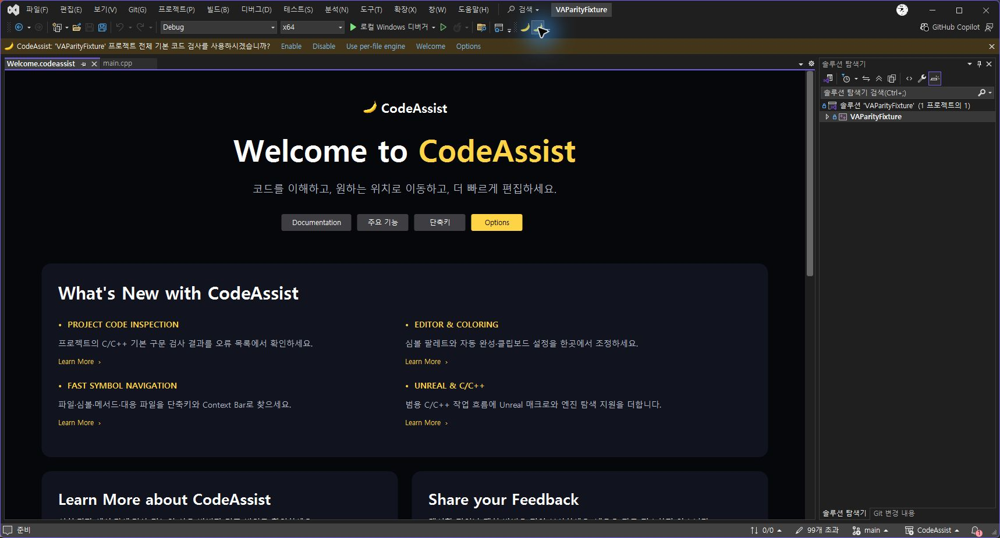

Tracefolio REPORTS & ISSUES
Tracefolio REPORTS & ISSUESCodeAssist 작업 인계 — 2026-10-15
기존 기록 이전원문에 기록된 작업 내용과 당시 검증 범위를 정리한 보관 기록입니다.
다음 작업 예약 — 사용자 재지시 후 시작
다음 작업 메모: Visual Studio 2019~실행 시점 최신 버전 대응, 실제 VA 동기화율 대조 보고 및 후속 차이 목록. 지금은 실행하지 않습니다.
현재 작업 — 0.0.73
사용자가 작업 시간이 길다고 지적해 현재 배치를 정리했습니다. 원본 비교를 위해 VA 사용 예약을 했다가 취소했으며 최종적으로 VA2630 사용자 비활성·CodeAssist0.0.73 활성 상태를 화면으로 확인했습니다. 활성화 예약 배너가 사라진 상태입니다. 원본 동일 입력 비교는 수행하지 않았습니다. validation/va-isolation-0.0.73.json 참고.
현재 지표는 원본 유사도·구현 기능 수만 사용합니다. 원본 유사도는 미측정, 완료 검증 0개·부분 구현 38개/108개입니다. 80% 달성은 확인되지 않았습니다. 아래 숫자는 당시 기록입니다.
REA MCP 리소스 증거와 디코더는 docs/validation/rea/*-20261015.json, tools/DecodeVaDialogs.py에 있습니다. 편집 공통 기능과 Smart Select 옵션을 통합했습니다. 회귀 164개 통과. 실제 IDE의 격리 편집 명령 체인 시나리오 14개가 통과했습니다. Native 선삽입 괄호의 새 쌍 판별과 Undo primitive를 적용했고, 주석 이어쓰기의 이전 SnapshotPoint 연산 예외를 수정했습니다. validation/editor-integration-0.0.73.json과 설치 MVID를 대조했습니다. 버전은 ExtensionPackage.ProductVersion과 manifest를 함께 갱신합니다. 진단 명령은 CODEASSIST_EDITOR_CHECKS=1인 프로세스에만 표시되며 Tools 메뉴 맨 아래에 있습니다. tools/VerifyEditorIntegrationReport.ps1로 보고서 버전·MVID·14개 고유 시나리오를 검증합니다. CODEASSIST_TRACE_EDITOR=1인 테스트 IDE에만 입력 로그를 남기며 기본 실행은 꺼집니다. 동작 성공을 추측하지 마세요. 실제 로그는 %LOCALAPPDATA%/CodeAssist/Welcome-host.log입니다. 사용자 main.cpp의 GetWorl을 보존하고 별도 tests/EditorInteractionFixture.cpp에서 테스트합니다.
언어·선택 옵션·추천 색상 보강 — 0.0.64
한국어/영어 언어 설정과 전체 번역표를 추가했습니다. 회귀115개 통과. 함수 추천 색상과 한국어 Smart Select 토글은 실제0.0.63 IDE에서 확인했습니다.0.0.64는 언어 테이블의 언어 자동 등록을 보강했습니다. 전체 VA 옵션 동등성은 미완료입니다.
동기화율·구현율 재점검
현재 감사 결과: 회귀103개 통과, 패키지6개 및 등록 키24개 검사 통과. 부분 대응26/108(24.1%)는 구현 완성률이 아닙니다. 전체 구현 완료 검증0/108, VA 완전 동등성 검증0/108이며 실제 완성도·유사도는 미확인입니다. Welcome은 실제 클릭 검증 통과를 별도 기록했습니다.
실제 PC 클릭 검증 완료 — 0.0.61
2026-10-15 Computer Use의 공식 node_repl MCP와 @oai/sky로 실행 중 Visual Studio를 직접 조작했습니다. 0.0.60의 오류 대화상자와 InitializeEditorInstance의 0x80070057 실패를 재현했습니다. 0.0.61은 등록된 편집기를 VsShellUtilities.OpenDocumentWithSpecificEditor로 열어 VS가 MiscFiles 프로젝트와 문서 항목을 결정하도록 변경했습니다. 이전 실패에서 어느 개별 인수가 원인이었는지는 확정하지 않습니다.
설치한 0.0.61의 바이너리6개 해시를 패키지와 대조했습니다. 실제 VAParityFixture 솔루션에서 시작 시 Welcome 표시 → 문서 탭 닫기 → 두 번째 바나나(Welcome) 클릭 → 문서 탭 재열기 → 같은 버튼 반복 클릭 후 Welcome 탭1개 유지를 확인했습니다. 코드 main.cpp 탭과 같은 문서 영역에 표시됩니다. 로그의 CreatedDocumentFrame type=1 및 ReusedDocumentFrame도 대조했습니다. 이 결과는 Welcome 흐름에 한정하며 다른 기능 전체의 동등성 검증은 아닙니다.

실제 UI 검증 기록（원문의 비공개·미보존 참조） · 설치 확인（원문의 비공개·미보존 참조） · 호스트 로그（원문의 비공개·미보존 참조）.
분석율: 명세108/108(100%, 문서 기준), 전체 역분석 미확인. VA 동기화율: 완전 검증0/108(0%), 부분 구현 대응26/108(24.1%). 미완료: VA 전체 동작·Undo·성능 비교와 미지원 기능. Welcome 추가 요구사항의 통과를108개 전체 기능 통과로 계산하지 않습니다.
이전 검증 이력 (아래 미검증 표기는 당시 상태)
사용자 재검증 실패와 PC 제어 도구 차단 상태
사용자가 0.0.59에서도 Welcome이 동작하지 않는다고 확인했습니다. 성공으로 집계하지 않습니다. 최신 사용자 실행 로그에는 ready=True와 WelcomeOpenAlreadyInProgress가 남아 있습니다. 직접 화면 클릭과 검증이 요구됐으나 현재 세션 도구 목록에는 node_repl/sky PC 제어 실행 도구가 없습니다. 로컬 스킬 파일과 활성화 설정, node_repl MCP 구성은 존재합니다. 실행 도구가 누락된 원인은 미확인입니다. 임의 우회 제어·설정 변경·새 제품 버전 배포는 수행하지 않았습니다. 도구 확인（원문의 비공개·미보존 참조）.
Computer Use의 서버·스킬이 활성화된 실행 세션에서 실제 버튼 클릭 → 생성 경로 디버깅 → 수정 후 같은 UI 흐름 재실행이 필요합니다. 이전 프로세스 스냅샷은 마우스 조작이나 화면 검증이 아닙니다.
실행 중 진단과 Welcome 생성 경로 수정 — 0.0.59
사용자가 0.0.58에서도 무반응을 확인했습니다. 클릭 로그（원문의 비공개·미보존 참조）의 0.0.58 MVID=757f43aa-bf81-4060-af35-3bbfe6bef273 기록은 WelcomeCommandInvoked → OpenSpecificEditor → MapLogicalView까지 도달하며 편집기 생성/프레임 표시 기록은 없습니다. 버튼 등록 실패 가설은 이 실행 로그와 맞지 않습니다. MapLogicalView 뒤 중단의 정확한 원인은 아직 미확인입니다.
켜져 있는 Visual Studio PID22696에 Microsoft ClrMD의 읽기 전용 프로세스 스냅샷을 연결했습니다. 실제 로드된 CodeAssist.Extension/Core/Indexing 경로가 0.0.58 설치 폴더임을 확인했습니다. 채취 시점에는 Welcome 관련 실행 스택이 없었습니다. 이것은 과거 클릭 시점의 중단점·호출 스택 캡처가 아니며 교착을 증명하지 않습니다. 실행 중 진단（원문의 비공개·미보존 참조）. 진단 소스는 tools/LiveVsDebugger에 보존했습니다. PC 마우스 조작이나 버튼 자동 클릭을 수행한 것은 아닙니다.
0.0.59 변경:
- 전용 문서 편집기는 유지하고, OpenSpecificEditor에 이름이 명시된 Welcome physical view를 넘겨 로그가 끝난 암시적 MapLogicalView 조회 경로를 거치지 않도록 했습니다.
- MapLogicalView도 Primary에 Welcome을 반환합니다. 미지원 논리/물리 뷰는 거절합니다.
- Welcome 자동 열기를 패키지의 모든 초기화 await 이후에 예약합니다. 초기화 중 클릭은 보류하고 완료 후 처리합니다. 중복 열기 재진입을 막습니다. 기존 초기화 시점 문제는 가능성에 대한 예방 수정이며 교착의 확정 원인으로 계산하지 않습니다.
- OpenSpecificEditor의 실제 반환 HRESULT와 frame 유무를 기록하고, S_FALSE/null frame을 성공으로 처리하지 않습니다. 팩터리 진입 기록을 UI 스레드 검사보다 앞에 두고 스레드 검사 실패도 기록합니다.
- ActivityLog 서비스가 없을 때 진단 로그 자체가 편집기 동작을 중단시키지 않도록 했습니다. 오프라인 검사에서 기존 로거가 서비스 부재로 예외를 내는 것을 재현했습니다. 실제 VS 무반응 원인이라는 뜻은 아닙니다.
Release 빌드, 패키지6바이너리·24단축키, 명령 연결, DocData COM, 메서드 표시, 이름 있는 뷰 매핑과 미지원 뷰 거절 검사가 통과했습니다. 실제 VS의 새 빌드 문서 표시·닫기·재열기는 미검증입니다. 뷰 매핑 검사（원문의 비공개·미보존 참조） · 설치 상태（원문의 비공개·미보존 참조）.
명세 확보율108/108(100%, 문서 기준), 전체 역분석 미확인. VA 동기화율 완전 검증0/108(0%), 부분 구현 대응26/108(24.1%). 미완료: 새 빌드 적용 및 실제 Welcome 수명 검증, 원본 기능별 비교.
Welcome 명령 등록 보강 — 0.0.58
0.0.57에서 두 번째 바나나가 무반응이라는 사용자 보고를 실패로 유지합니다. 명령 등록이 OleMenuCommandService로 캐스팅되지 않으면 아무 오류 없이 건너뛰던 경로를 IMenuCommandService 인터페이스 기반 등록으로 변경했습니다. 서비스가 없으면 명시적으로 실패하며, 등록 전 UI 스레드로 전환합니다. 실제 VS에서 캐스팅 실패가 발생했는지는 미확인입니다.
실제 VSCT의 두 번째 도구 모음 항목과 명령 GUID/ID를 읽고, 실제 MenuCommandService에 등록한 뒤 Invoke하여 Welcome 콜백만 실행되는 것을 확인했습니다. Settings 콜백 분리와 서비스 누락 시 실패도 검사했습니다. 이는 명령 등록·연결 회귀 검사이며 실제 Visual Studio 버튼 클릭 성공을 검증한 것은 아닙니다. 연결 검사（원문의 비공개·미보존 참조）.
전용 문서 편집기·팩터리는 유지합니다. StartupCommandsRegistered → WelcomeCommandInvoked → PrepareWelcomeDocument → OpenSpecificEditor → MapLogicalView/CreateEditorInstance → CreatedDocumentFrame 단계 기록을 추가하여, 무반응이 명령 전달 이전인지 문서 생성 중인지 구분합니다. 로그는 %LOCALAPPDATA%/CodeAssist/Welcome-host.log에 남습니다. 과거 로그를 새 빌드 성공 증거로 사용하지 않습니다.
0.0.58 Release 빌드, 패키지6개 바이너리·단축키24개 검사, 메서드 표시·DocData COM 계약·버튼 연결 회귀 검사가 통과했습니다. 실제 IDE Welcome 열기·닫기·재열기는 아직 미검증이며, 무반응 해결 완료로 보고하지 않습니다. 설치 상태（원문의 비공개·미보존 참조）.
명세 확보율108/108(100%, 문서 기준), 전체 역분석 미확인. VA 동기화율 완전 검증0/108(0%), 부분 구현 대응26/108(24.1%). 미완료: 실제 Welcome 표시와 수명 검증, 기능별 VA 비교.
Welcome 재발 확인과 비율 산정 — 0.0.57
0.0.57 설치 완료: 공식 설치 도구 종료 코드0, 설치 manifest와 바이너리6개 SHA256 일치 확인. 실제 IDE Welcome 클릭 성공은 미검증입니다. 설치 검증（원문의 비공개·미보존 참조）.
사용자가 0.0.56 설치 후에도 Welcome 실패를 확인했습니다. 보존한 실제 로그（원문의 비공개·미보존 참조）에서 CreateDocumentWindow가 두 번 E_INVALIDARG(0x80070057)를 반환했습니다. 경로 변경으로 해결되지 않았으며, 어떤 인수가 거절됐는지는 미확인입니다. 이전 경로 가설은 확인된 원인으로 사용하지 않습니다.
직접 CreateDocumentWindow 호출을 제거하고 등록된 WelcomeEditorFactory·명시적 IVsPersistDocData·OpenSpecificEditor 경로로 교체했습니다. 문서 데이터는 변경 없음·저장 불가로 처리하며, 같은 프레임 재사용 및 닫힘을 기록합니다. 새 로그에는 빌드 MVID와 프레임 타입=1 성공/재사용/닫힘을 기록합니다. 창 타입 검사를 통과하지 않으면 성공으로 처리하지 않습니다.
0.0.57 Release 빌드, 편집기 등록을 포함한 패키지(바이너리6개·단축키24개) 검사, 메서드 표시 회귀 검사, DocData COM QueryInterface·편집기 GUID·clean 상태·저장 불가 계약 검사가 통과했습니다. 실제 VS UI 스레드의 팩터리 생성·Welcome 열기·닫기·재열기는 아직 미검증입니다. 이번에도 빌드/오프라인 검사를 네이티브 성공으로 바꾸어 보고하지 않습니다. 검사 결과（원문의 비공개·미보존 참조）.
구현률과 VA 동기화율의 계산
108개 공개 기능의 기능별 검증표（원문의 비공개·미보존 참조）를 생성하고 tools/VerifyFeatureCoverage.py로 ID 중복·분모·부분 구현 집계 일치를 확인했습니다. 이 도구는 실제 VA를 실행하는 비교 테스트가 아닙니다.
| 지표 | 분자 기준 | 현재 결과 |
|---|---|---|
| 문서 기반 명세 확보 | 문서·설치 도움말 기반 부분 명세가 있는 항목 | 108/108(100%). 전체 역분석 완료율 아님 |
| 부분 구현 대응 | 기존 소스 대응 분류가 partial인 항목 | 26/108(24.1%). 완성률 아님 |
| 구현 완료 검증률 | 합의한 전체 시나리오와 적용 가능한 검증 관문을 CodeAssist에서 모두 통과 | 증거 확보0/108(0%). 실제 구현 완성도는 미확인 |
| VA 동기화 검증률 | 위 구현 검증에 더해 VA2630과 동일 조건의 실제 비교를 모두 통과 | 증거 확보0/108(0%). 실제 유사도를 0%라고 뜻하지 않음 |
기능별로 동작, 편집/Undo, 메뉴·단축키, 설정·기본값, 취소·창 수명, 지원 범위, 성능의 7개 관문을 둡니다. 해당되지 않는 관문은 근거와 이유를 기록합니다. 기능은 관문 일부만 통과해도 완성 항목으로 계산하지 않습니다.
동일 VS 버전과 동일 fixture 파일·커서·옵션에서 VA만 활성화한 실행과 CodeAssist만 활성화한 실행을 별도로 기록합니다. 사용자 스크린샷에는 두 확장의 안내바가 함께 표시되어 있으므로 그것만으로 단독 성능·색상·완성 동등성을 판정할 수 없습니다. 결과 목록·위치·범위·편집 내용·Undo·키 충돌·기본값·테마·닫기/재열기를 비교하고, 실제 프로젝트 C:/Projects/UnrealTestProject에서도 별도 검사합니다.
각 시나리오에는 IDE/확장 버전, DLL 및 입력 파일 SHA256, 기대/실제 결과, 원본 로그·화면을 보존합니다. 성능은 콜드/웜 구분, p50/p95 지연, CPU·메모리를 별도로 측정하고 VA 측정 후 허용 기준을 정합니다. 미실행·실패·다른 빌드의 증거는 통과로 계산하지 않습니다. 새 기능·세부 요구사항이 발견되면 버전이 명시된 분모를 확장합니다. Welcome 등 공개108항목 밖의 제품 요구사항도 별도 실패/검증 목록으로 유지합니다.
명세 확보율108/108(100%, 문서 기준), 전체 역분석 미확인. VA 동기화율 완전 검증0/108(0%), 부분 구현 대응26/108(24.1%). 미완료: 실제 Welcome 호스트 검증, 기능별 원본·재구현 비교 실행, 구현 완료율 증거 확보, 전체 기능 동등성.
Welcome 버튼 오류 대응 — 0.0.56
배포 상태: 0.0.56 패키지 생성·6개 바이너리 일치·24개 단축키 등록 검사, WPF 화면 9개 및 버튼 관련 오프라인 회귀 검사 통과. Visual Studio 실행 중이므로 설치는 보류했습니다. 현재 실행 중인 IDE에는 적용되지 않았습니다. 설치 상태（원문의 비공개·미보존 참조）.
두 번째 바나나는 Welcome 명령(0x140)입니다. 사용자가 0.0.55에서 클릭한 뒤 Visual Studio의 “값이 예상 범위를 벗어났습니다” 오류를 보고했습니다. 0.0.55의 실제 Welcome 호스트 동작은 실패한 것으로 기록하며, 오프라인 화면 검사를 성공 근거로 대체하지 않습니다.
- 기존 문서 식별자 codeassist://welcome은 .NET Framework의 Path.GetFullPath에서 NotSupportedException을 발생시켰습니다. SDK가 요구하는 Windows 문서 경로로 바꾸고 NonCreatable·VirtualDocument 플래그를 추가했습니다. 실제 오류가 이 식별자 때문인지는 아직 미확인입니다.
- Welcome 생성·프레임 타입 확인·ViewHelper 등록·표시 중 실패 단계를 %LOCALAPPDATA%/CodeAssist/Welcome-host.log와 ActivityLog에 HRESULT와 함께 기록합니다. 실패 시 원래 예외를 정리 오류로 덮어쓰지 않습니다. WelcomeSeen은 성공 시에만 저장합니다.
- Context Bar의 SemanticToken 타입 이름 표시를 오프라인 WPF에서 재현했습니다. 공통 ComboBox의 템플릿 선택기·문자열 형식 전달을 복구하고 메서드에 명시적 Name 템플릿을 적용했습니다. 수정 후 BeginPlay 표시를 확인했습니다.
- 도구 모음의 두 버튼에 옵션/Welcome 툴팁을 명시했습니다.
회귀 검사（원문의 비공개·미보존 참조）. 실행 도구: tools/VerifyWelcomeButton.ps1. 이 검사는 기존 템플릿 표시 문제와 경로 유효성을 재현하며 실제 VS의 CreateDocumentWindow 호출이나 버튼 클릭 성공을 검증하지 않습니다. 네이티브 오류 해결 여부는 미확인입니다.
공식 계약: CreateDocumentWindow, RDT 플래그.
명세 확보율 108/108(100%, 문서·도움말 기준), 전체 역분석 진행률 미확인. VA 동기화율 완전 검증 0/108(0%), 부분 구현 대응 26/108(24.1%). 미완료: 실제 VS Welcome 열기·닫기·재열기, 전체 IDE 통합 검증, 미지원 기능 및 VA 전체 동등성.
현재 목표는 VA2630 전체 기능을 독립 구현하고 원본과 비교하는 것입니다. 완료되지 않았으며 범위를 축소하지 않습니다. 최신 사용자 지시로 제품 구현을 재개했습니다. 이전의 분석 전 코딩 보류 지시보다 최신 구현 지시를 우선합니다.
현재 배포본 — 0.0.55
CodeAssist 인터페이스에 최신 화면·연결·미지원 범위를 정리했습니다. ProductOptions.cs, ProductWelcome.cs, ContextBar.cs, ProjectInspection.cs, Indexing/ProjectSyntaxInspection.cs를 추가했습니다. 설정은 초안 복사 후 저장 성공 시에만 적용합니다.
자동 테스트103개, WPF 화면9개와 색상·검색 입력 검사, 실제 UnrealTestProject 기본 검사4파일/0건, Release 패키지 검증을 통과했습니다. 설치 manifest·6개 바이너리 해시로0.0.55 설치도 확인했습니다. 실제 VS 문서 탭·툴바·마진·InfoBar·오류 목록 통합 동작은 미확인입니다.
미지원 옵션은 설명만 표시합니다. 프로젝트 검사는 기본 구문 후보 검사이며 VA 전체 검사 엔진을 복원했다고 보고하지 않습니다. 설치 근거는 validation/install-0.0.55.json입니다.
최신 수정 — 0.0.54
사용자 스크린샷으로 Welcome이 여전히 떠 있는 도구 창임을 확인했습니다. WelcomeToolWindow·ProvideToolWindow 등록·ShowToolWindowAsync·FrameMode 변경 경로를 제거하고 WelcomeDocumentWindow.cs의 CreateDocumentWindow로 교체했습니다. 결과 프레임 종류가1인지 런타임 검사합니다. 실제 편집기 탭 표시와 닫기·재열기 실행 검증은 미확인입니다.
Release 패키지 검증 통과. 현재 VS 실행 중이므로0.0.54 설치는 보류 상태이며 루트 CodeAssist.vsix가 새 배포본입니다. 기존 설치가 갱신된 것으로 보고하지 마세요. validation/install-0.0.54.json을 확인합니다.
현재 수정 — 0.0.53
사용자 스크린샷의 검은 선택 컨트롤 글자를 이전0.0.52 DLL로 재현하고 스타일의 동적 VS 글자색 연결로 수정했습니다. 밝은/어두운 테마6개 오프라인 WPF 화면과 선택 컨트롤 전경색 검사를 통과했습니다. 기존 렌더러의 밝은 색 강제를 제거했습니다. 실제 IDE 테마 전환 전체 검증은 아닙니다.
Welcome·InfoBar를 설정 모달보다 먼저 표시하도록 변경하고, Welcome의 문서 영역 표시를 요청합니다. InfoBar 호스트 지연은 최대10회 재시도하며 실패를 로그에 남깁니다. 자동 테스트95개 통과. 실제 설치 결과는 validation/install-0.0.53.json, 화면 근거는 startup.html을 확인합니다.
최신 수정 — 0.0.52
색상 추천 체크박스·실제 색상 맵 갱신·열린 문서 무효화와 작은 바나나 메뉴/탭/안내바 아이콘을 추가했습니다. 편집 분석 중앙값은 해당 .NET8 벤치마크에서176.9→28.9ms로 감소했습니다. VS 전체 CPU 개선으로 계산하지 않습니다. 자동 테스트93개 통과.
설치됐던 CodeAssist와 중복 UEAssist는 둘 다0.0.49였습니다. 이전 UEAssist를 백업 후 공식 설치 도구로 제거하고 CodeAssist0.0.52를 설치했습니다. 설치 manifest·6바이너리 해시로 확인합니다. 실제 IDE 표시·성능은 미확인입니다. 상세.
이번 구현 — 0.0.52
첫 실행·Welcome HTML 안내에 구현·근거·차이·화면을 정리했습니다. Release 빌드와 자동 테스트93개, 패키지6바이너리·24키·아이콘·Welcome 등록 검증이 통과했습니다. WPF 화면은 별도 렌더링으로 확인했으며 실제 IDE 실행 비교가 아닙니다. 바나나 아이콘을 적용했습니다.
신규 파일: CodeAssist.Core/StartupPreferences.cs, CodeAssist.Extension/StartupUi.cs, CodeAssist.Core.Tests/StartupPreferencesTests.cs, tools/RenderStartup.ps1. 사용자 설정은 LocalAppData/CodeAssist/startup.xml에 저장합니다. 기본 통합은 CodeAssist 자동 완성·색상을 끄며, 전체는 켭니다. 키 선택 대화상자·VA 문서 탭 방식·픽셀 동등성은 미완료입니다.
검증된 현재 상태
- 기능 분모108개, 완전 동등성0개, 부분 구현 대응26개.
- 문서·설치 도움말 기반 부분 명세 확보108/108개(100%). 전체 분석 완료0개.
- 기존 VA 파일 검색 관찰10개와 현재 core filter 결과10개 일치. UI 전체 비교 아님.
- REA6.5.0 CLI 사용: 단축키88메서드 원본token/signature/IL 대조. 현재 세션 MCP 직접 연결 없음.
- 최근 캐시 분석은 LLVM 특정 범위·PE vtable/import/literal 대조. REA native provider 결과로 보고하지 않음.
- 캐시 저장·헤더·초기화·로드·record parser 부분 근거는 docs/validation/native-cache-*.json.
- 실제 VA Data/vs17_1 읽기 전용 관찰620파일47,438,073bytes. 전체 참조 베이크 여부 미확인.
- XERJ 서버와 CLI 검색 사용 확인. 현 세션 MCP 직접 연결 미확인.
현재 소스에서 확인한 통합 구조 과제
- FindReferencesCommand.cs는 명령 내부 CancellationTokenSource를 사용합니다. 공통 명령 수명 모델을 확정해야 합니다.
- NavigationCommands.cs 일부 명령은 VS NavigateBackward/Forward·Refactor.Rename·QuickActions로 연결합니다. VA 자체 구현 완료로 계산하지 않습니다.
- CompletionCommandFilter.cs 공급자 ContentType은 C/C++입니다. 범용 목표의 언어별 backend·UI 제공 범위를 명세해야 합니다.
- CompilerRename.cs는 자체 preview/Undo 처리, CompilerSemanticService.cs는 clangd 환경값·구성 파일·timeout을 사용합니다. 공통 편집 transaction 및 backend 정책은 아직 확정되지 않았습니다.
이어서 할 작업
- 0.0.52 첫 실행·Welcome·상단 안내바를 실제 VS에서 검증하고 VA2630과 비교합니다. 미확인 원본 동작도 계속 명세에 기록합니다.
- FileFinder key/string/status 의미와 context 생성 helper, 실제 파일 경로·무효화를 검증합니다. 파일 cache를 semantic reference index로 간주하지 않습니다.
- 원본 UI·키·기본값·theme·Undo·성능 비교를 수행합니다. 게임 종료가 확인되지 않았으므로 UI조작·대형Ghidra작업 금지를 유지합니다.
- 전체 분석이 충족된 뒤 범용 CodeAssist를 통합 구현하고 UnrealTestProject에서 실사용 비교합니다.
- 최종 패키지·문서·버전·설치 테스트를 수행합니다. 기존 VSIX0.0.49를 완전 복제본으로 소개하지 않습니다.
반복하지 말아야 할 것
- 설정 등록을 현재 세션 MCP 연결 성공으로 말하지 않습니다.
- 현재 사용자 값·설치 도움말·factory reset 관찰을 구분합니다.
- hash 일치·단위 테스트·문서 수를 기능 동기화율로 계산하지 않습니다.
- 원본binary/vendor source를 제품에 복사하거나 trial/license를 우회하지 않습니다.
- 질문 금지 지시 유지. 독립적으로 진행 가능한 작업을 질문으로 중단하지 않습니다.
통합 분석 HTML · 검증 장부（원문의 비공개·미보존 참조）
종료 시점 최신 상태와 근거 링크
사용자의 재개 요청 후 분석 중입니다. 이전 중단 이후의 최신 결과는 아래 재개 갱신 항목을 기준으로 확인합니다.
- 분석율(부분 명세 확보 기준): 108/108개 = 100%. 전체 역분석 완료율이 아니며, 네이티브/runtime/초기값 전체 검증은 미완료입니다.
- 전체 역분석 진행률: 미확인. 전체 분석 완료 조건을 충족한 기능0개.
- VA 동기화율: 완전 동등성0/108개(0%), 부분 구현 대응26/108개(24.1%).
- 증거 무결성 장부: 146개 통과, 0개 실패. 기능 동등성 테스트 수가 아닙니다.
- REA: 단축키88개 및 VS구성47개 메서드 재구성 token/signature/IL 대조. 검사/버퍼/IPC 흐름217개 부분 재구성 근거 별도 보존. 합계를 고유 메서드나 기능 분석 완료 수로 계산하지 않습니다.
- native: 기존 core180개 decompilation과 최근 cache save/load/header/reset/parser의 좁은 LLVM 분석. REA native provider로 분석했다고 주장하지 않습니다.
- 현재 제품 코드의 최근 기능 추가는 보류. 전체 분석 후 통합 코딩하라는 지시 유지.
근거별 바로가기
- 통합 분석 HTML
- 108개 기능 장부（원문의 비공개·미보존 참조）
- compilerConfigurationEvidence（원문의 비공개·미보존 참조）
- inspectionPipelineEvidence（원문의 비공개·미보존 참조）
- installedHelpCatalog（원문의 비공개·미보존 참조）
- installedHelpLinks（원문의 비공개·미보존 참조）
- generalParserHelpEvidence（원문의 비공개·미보존 참조）
- nativeProjectReuseReview（원문의 비공개·미보존 참조）
- refactoringGenerationEvidence（원문의 비공개·미보존 참조）
- navigationEditVisualEvidence（원문의 비공개·미보존 참조）
- installedHelpDefaultEvidence（원문의 비공개·미보존 참조）
- keybindingEvidence（원문의 비공개·미보존 참조）
- nativeCacheReview（원문의 비공개·미보존 참조）
- nativeCacheSaveFlow（원문의 비공개·미보존 참조）
- passiveVADataSnapshot（원문의 비공개·미보존 참조）
- nativeCacheOpenLoadFlow（원문의 비공개·미보존 참조）
- nativeCacheHeaderReset（원문의 비공개·미보존 참조）
- nativeCacheParserRules（원문의 비공개·미보존 참조）
- evidenceProvenanceAudit（원문의 비공개·미보존 참조）
- historicalRuntimeComparison（원문의 비공개·미보존 참조）
- vsConfigurationEvidence（원문의 비공개·미보존 참조）
- configurationFixtureEvidence（원문의 비공개·미보존 참조）
- integratedArchitectureDesign（원문의 비공개·미보존 참조）
- installedEditorFeatureEvidence（원문의 비공개·미보존 참조）
재개 시 준수 사항
- 모든 보고 마지막에 분석율·VA 동기화율·미완료 항목을 기록합니다. 분석율은 현재108/108 부분 명세 기준으로 명확히 표기하고, 전체 역분석 완료율과 혼동하지 않습니다.
- 제품 범위는 범용이며 UnrealTestProject는 실사용 테스트 대상입니다.
- 원본 UI·키·Undo·factory값·성능 비교가 아직 필요합니다. 게임 종료를 확인하지 못했으므로 UI조작·무거운 분석을 임의 재개하지 않습니다.
- 중복 setup·이미 확보한 전체 메타데이터 재수집을 피하고 미확인 항목과 입력 사례에 집중합니다.
전체 범주 일괄 분석 갱신
- 문서·설치 도움말 기반 기능 계약은 108/108개(100%) 연결했습니다. 전체 역분석 완료를 의미하지 않습니다.
- 설치2630의 native/runtime/초기값/키/UI/Undo/성능을 모두 대조한 기능은 아직0개입니다. 전체 역분석 진행률은 미확인입니다.
- 전 범주 공식 문서 계약56개（원문의 비공개·미보존 참조）를 기존 근거와 합쳤습니다. Rename Files 단일Undo 불가, template 이동 두단계, snippet 중복/대소문자, C# 공급원, inspection 그룹Undo와 UI예외를 포함합니다.
- REA Source Links（원문의 비공개·미보존 참조）: 설치 Editor/WPF 참조를 해결해66개 재구성의 unknown-result-type 주석14개를0개로 줄이고 원본IL 대조를 다시 수행했습니다. 이전 raw재구성도 v1파일로 보존했습니다. 원본을 실행한 것은 아닙니다.
- 심볼 DB 모델（원문의 비공개·미보존 참조）: 공식 문서는 사전 생성 심볼DB를 배포하지 않으며 system 공유 읽기전용/dynamic 읽기쓰기DB를 구분합니다. 설치 크기로 사용자 참조 사전베이크를 추정하던 가설은 폐기합니다.2630 전체schema·무효화는 미확인입니다.
- 통합HTML과증거 장부（원문의 비공개·미보존 참조）가 기준입니다. 제품 기능 코드는 변경하지 않았습니다.
다음 분석 우선순위
- 문서 조사는 전 항목에 근거가 있으므로 같은 조사를 반복하지 않습니다.
- 원본2630 native 의미·설정 바인딩·실행 관찰이 빠진 구체적인 조건부터 검증합니다. 유사한 명칭이나 metadata 개수를 동작 복원으로 승격하지 않습니다.
- 사용자가 PC 미사용과 테스트를 허용했습니다. 다만 현 세션 Windows UI 도구가 없으므로 VS 클릭 테스트는 미확인입니다.
- 최신 지시로 구현을 재개했습니다. 구현과 원본 동등성 검증은 구분합니다. 현재 단계의100%는 문서계약 커버리지에만 해당합니다.
분석율: 부분 명세 확보100%(108/108), 전체 역분석 진행률미확인. VA 동기화율: 완전검증0/108(0%), 부분구현대응26/108(24.1%). **미완료:**2630원본분석·실행비교·통합구현·성능검증.
0.0.74 미설치 작업 묶음
남은 70개 장부: 26개 부분 구현 추가, 44개 미구현. 전체 108개 중 부분 대응 64개. 완료 검증·VA 유사도 미측정. 사용자 게임 중 PC 제어·디버깅·설치·재시작 금지. 새 VSIX는 빌드만 하며 기존 설치본과 구분합니다. Welcome 한글·언어 선택, 내부 도움말, 파일·스니펫·주석·include·컴파일러 변경 미리보기·링크·안내선·우클릭 메뉴·스레드 설정 추가. 다음 작업은 44개 미대응 구현 및 26개 부분 구현의 누락 조건 보완입니다.
0.0.75 최신 미설치 묶음
전체 남은 항목, 검증 근거（원문의 비공개·미보존 참조）. 29개 부분 대응 추가: 전체 93/108개 부분 대응, 15개 미구현. 완료 검증 0개·원본 유사도 미측정. 자동 테스트 235개 통과. 사용자 게임 중이므로 실제 IDE·디버거·PC 제어·설치·재시작은 수행하지 않았습니다. 메모리 읽기와 인쇄 등은 명령 코드만 연결되어 실제 호출하지 않았습니다. 다음 작업은 15개 미구현 및 각 부분 구현의 명시된 누락을 완성하는 것입니다.
0.0.76 최종 인계
초기 70개 모두에 기본 소스·명령이 연결되어 장부상 전체 108개가 부분 구현입니다. 완전 구현이나 원본 유사도 100%를 선언하지 않습니다. 전체 제한 목록, 빌드·검증 근거（원문의 비공개·미보존 참조）, 소스 장부（원문의 비공개·미보존 참조）를 확인하세요. 최종 패키지는 프로젝트 루트 CodeAssist.vsix 0.0.76이며 설치하지 않았습니다. 게임 중 PC 제어·디버깅 금지와 종료 미요청을 지켰습니다.
<a id="next-verification-076"></a>
다음 검증 순서
- 패키지 버전·확장 DLL SHA256과 실제 로드된 빌드 일치부터 확인합니다. 현재 0.0.76은 빌드만 했으며 설치하지 않았습니다.
- C++ 작은 fixture에서 Welcome 한국어·내부 도움말, 추천·스니펫, 옵션·토글·Undo, 파일 명령을 확인합니다.
- 서명 재배치·포인터 전환·추출·일괄 이동의 결과를 확인하고 컴파일합니다. 서명 변경은 순서만, 추출은 전역 void·명시 매개변수만 지원하는 제한을 유지합니다.
- 빠른 수정의 진단 수집·미리보기·버퍼 보존·취소·Undo를 확인합니다. 검색·출력·맞춤법 분류의 실제 VS 콘텐츠 타입과 OS 사전 가용성을 확인합니다.
- PDB·RVA 도구·MEF 플러그인·메모리 뷰·스텝 필터는 별도 fixture로 확인합니다. 디버깅 명령은 이번에 실제로 실행하지 않았습니다. 인쇄는 사용자 동작으로만 실행되며 이번에 프린터 작업을 보내지 않았습니다.
- Unreal 실사용 검증 경로는 C:/Projects/UnrealTestProject입니다. VA와 CodeAssist를 분리한 동일 입력으로 결과·색상·기본값·키·Undo·CPU·지연을 비교합니다.
- feature-verification-matrix.json의 필요한 조건이 실제 증거로 통과할 때만 완료로 승격합니다. 메뉴 등록·단위 테스트·부분 코드만으로 전체 완료나 유사도를 계산하지 않습니다.
원문과 편집 이력
- 원문 SHA-256:
25158e7aa6f10516885c6b6555c2bf0a14f9fd9d7a3ef77335a24e45e08b2512 - 표시 날짜는 원본 파일의 수정 시각입니다. 작업 완료 시각은 원문에 있는 값을 기준으로 확인합니다.